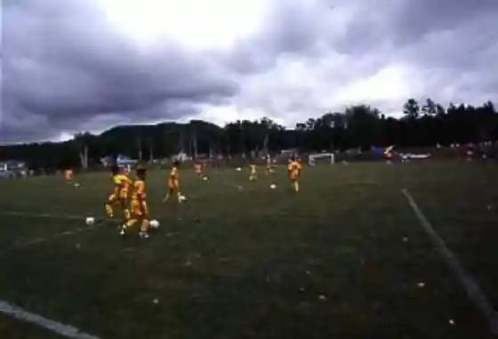
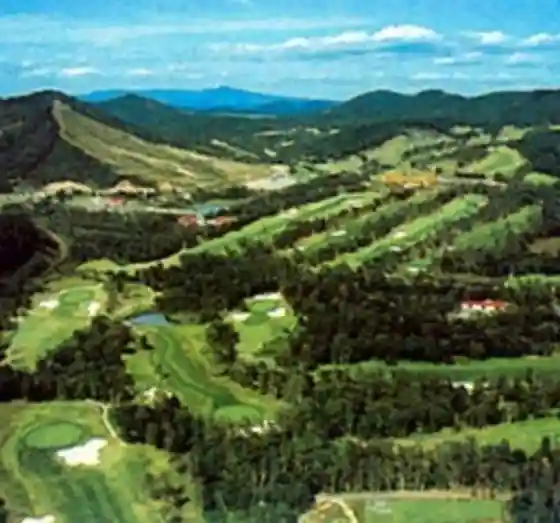
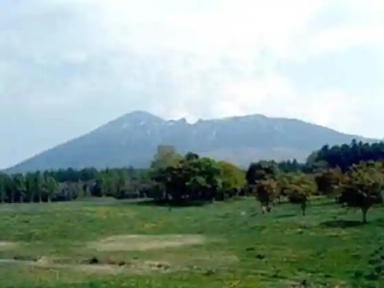

Appikogen Supotsu Park ASPA
Hachimantai, Iwate · 0195-72-5613 · Official / source link

Appikogen Gorufu Club
Hachimantai, Iwate · 0195-73-5311 · Official / source link
Nambu Fuji Kantorii Club
Hachimantai, Iwate · 0195-76-3151 · Official / source link

Kojiya Motomiya
Hachimantai, Iwate · 0195-63-1700 · Official / source link

Hachimantai Chinetsu Joki Some Experience
Hachimantai, Iwate · 0195-78-2451 · Official / source link
Katsuta Ya
Hachimantai, Iwate · 0195-72-2032 · Official / source link
Appi Maitake
Hachimantai, Iwate · 0195-72-3366 · Official / source link
Appikogen Ski Area
Hachimantai, Iwate · 0195-73-5111 · Official / source link
Tayama Ski Area
Hachimantai, Iwate · 0195-73-2650 · Official / source link
Ken'ei Matsukawa Campground
Hachimantai, Iwate · 0195-78-2256 · Official / source link
Hachimantai Resort Shita Kura Ski Area
Hachimantai, Iwate · 0195-78-3456 · Official / source link
Hachimantai Resort Pa no Rama Ski Area
Hachimantai, Iwate · 0195-78-2577 · Official / source link
Kitakan Seimen
Hachimantai, Iwate · 0195-72-2748 · Official / source link
Rojjitandemu
Hachimantai, Iwate · 0195-72-5219 · Official / source link
Appikogen Ranch Nyuseihin
Hachimantai, Iwate · 0195-73-6995 · Official / source link
Shikki Appi Nuri
Hachimantai, Iwate · 0195-63-1065 · Official / source link
Shichiji Uon Izumi Kei Baths
Hachimantai, Iwate · 0195-77-2573 · Official / source link
Hazawa Seika
Hachimantai, Iwate · 0195-72-3020 · Official / source link
Matsu Tchan Market
Hachimantai, Iwate · 0195-78-3002 · Official / source link
Ashiro Rindo
Hachimantai, Iwate · 0195-72-2111 · Official / source link
Nature Kyuyo Village Nakayama So
Hachimantai, Iwate · 0195-78-3132 · Official / source link
Appi Toshitsu Utsuwa Workshop
Hachimantai, Iwate · 0195-63-1065 · Official / source link
Oraho no Onsen (Higaeri Nyuyoku Shisetsu)
Hachimantai, Iwate · 0195-75-1515 · Official / source link
Damburi Baths
Hachimantai, Iwate · 0195-72-5344 · Official / source link
Yamamoto Yoho Ba
Hachimantai, Iwate · 0195-72-3542 · Official / source link
Washi no O
Hachimantai, Iwate · 0195-76-3211 · Official / source link
Tame Nai no Ippon Sakura
Hachimantai, Iwate · 0195-78-3500 · Official / source link
Fusetsu Hana
Hachimantai, Iwate · 0195-72-8008 · Official / source link
Higuchi Sembei Mise
Hachimantai, Iwate · 0195-76-2818 · Official / source link
Soba Tokoro Kita no Sobaya
Hachimantai, Iwate · 0195-72-2661 · Official / source link
Tsuma no Kami Hiroba Campground
Hachimantai, Iwate · 0195-78-2496 · Official / source link
Sai Flower Garden
Hachimantai, Iwate · 0195-76-4458 · Official / source link
Appikogen Ranch
Hachimantai, Iwate · 0195-73-6995 · Official / source link
Mori no Bridge
Hachimantai, Iwate · 0195-78-3500 · Official / source link
Ue Bo no Ippon Sakura
Hachimantai, Iwate · 0195-78-3500 · Official / source link
Roadside Station (Nishine)
Hachimantai, Iwate · 0195-75-0070 · Official / source link
Iwate Yama (Yaki Hashiri Ue Bo Tozanguchi)
Hachimantai, Iwate · 0195-78-3500 · Official / source link
Iwate Ginga Suteshon Tenmondai (Kyugyochu)
Hachimantai, Iwate · 0195-76-2013 · Official / source link
Gama Numa
Hachimantai, Iwate · 0195-78-3500 · Official / source link
Kurotani Chi Marsh
Hachimantai, Iwate · 0195-78-3500 · Official / source link
O Zaisho Enchi
Hachimantai, Iwate · 0195-78-3500 · Official / source link
Sakura Matsu Park
Hachimantai, Iwate · 0195-78-3500 · Official / source link
Shinrin Fureai Gakushu Kan Foresuto i (Ai)
Hachimantai, Iwate · 0195-78-2092 · Official / source link
Tashiro Taira Highlands
Hachimantai, Iwate · 0195-78-3500 · Official / source link
Chausu Gaku
Hachimantai, Iwate · 0195-78-3500 · Official / source link
Shichiji Uzan
Hachimantai, Iwate · 0195-78-3500 · Official / source link
Hachimantai Museum
Hachimantai, Iwate · 0195-63-1122 · Official / source link
Hachiman Numa
Hachimantai, Iwate · 0195-78-3500 · Official / source link
Fudo Falls
Hachimantai, Iwate · 0195-78-3500 · Official / source link
Horai Sakai
Hachimantai, Iwate · 0195-78-3500 · Official / source link
Matsuo Hachimantai Bijita Center Bussan Kan Asupiite
Hachimantai, Iwate · 0195-78-3500 · Official / source link
Hachimantai Matsuo Kozan Museum
Hachimantai, Iwate · 0195-78-2598 · Official / source link
Matsukawa Chinetsu Hatsudensho Matsukawa Chinetsu Kan
Hachimantai, Iwate · 022-722-6510 · Official / source link
Yaki Hashiri Yogan Ryu (Kuni Shitei Tokubetsu Tennenkinembutsu)
Hachimantai, Iwate · 0195-78-3500 · Official / source link
Ishikawa Takuboku no Kahi (Oizumi In Oyobi Shuhen)
Hachimantai, Iwate · 0195-78-3500 · Official / source link
Ishikawa Takuboku no Kahi (JR Hiradate Ekimae)
Hachimantai, Iwate · 0195-78-3500 · Official / source link
Ema Akiko no Shihi
Hachimantai, Iwate · 0195-78-3500 · Official / source link
Hachimantai
Hachimantai, Iwate · 0195-78-3500 · Official / source link
Hachimantai Asupiite Line
Hachimantai, Iwate · 0195-78-3500 · Official / source link
Hachimantai Jukai Line
Hachimantai, Iwate · 0195-78-3500 · Official / source link
Chie Falls
Hachimantai, Iwate · 0195-78-3500 · Official / source link
Mikaeri Toge
Hachimantai, Iwate · 0195-78-3500 · Official / source link
Appi Highlands
Hachimantai, Iwate · 0195-78-3500 · Official / source link
Appi Highlands Naka no Ranch
Hachimantai, Iwate · 0195-78-3500 · Official / source link
Appikogen Buna Niji Hayashi
Hachimantai, Iwate · 0195-78-3500 · Official / source link
Kanazawa Shimizu
Hachimantai, Iwate · 0195-78-3500 · Official / source link
Iihatobu Kazan Kyoku
Hachimantai, Iwate · 0195-78-4881 · Official / source link
Iwateken Kenmin no Mori Oyamadaenjiniaringu Hachimantai Foresuto
Hachimantai, Iwate · 0195-78-2092 · Official / source link
Hachimantai Sancho Resutohausu
Hachimantai, Iwate · 0195-78-3500 · Official / source link
Matsukawa Gorge
Hachimantai, Iwate · 0195-78-3500 · Official / source link